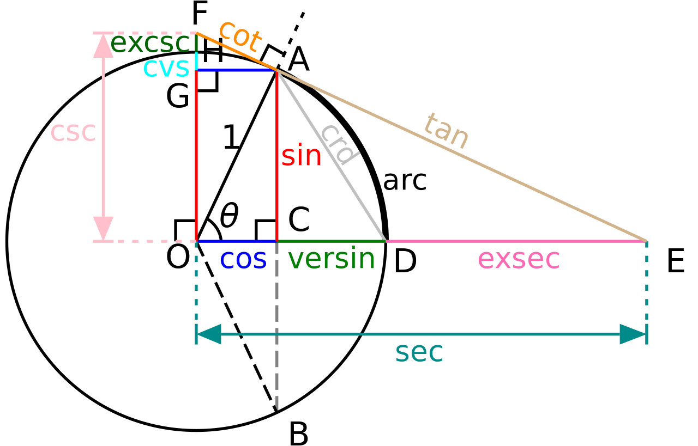
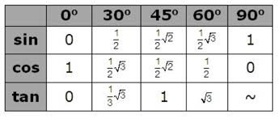

Sinlui3 |
|
TrigonometriTrigonometri (dari bahasa Yunani trigonon = "tiga sudut" dan metron = "mengukur") adalah sebuah cabang matematika yang mempelajari hubungan yang meliputi panjang dan sudut segitiga. Bidang ini muncul di masa Helenistik pada abad ke-3 SM dari penggunaan geometri untuk mempelajari astronomi. Trigonometri mudah dikaitkan dalam bidang segitiga siku-siku (dengan hasil jumlah besar kedua sudut lancip sama dengan besar sudut siku-siku). Peranan untuk selain segitiga siku-siku juga ada. Sejak segitiga yang bukan siku-siku dapat dibagi menjadi dua segitiga siku-siku, banyak masalah yang dapat diatasi dengan penghitungan segitiga siku-siku. Karena itu, sebagian besar penggunaan trigonometri berhubungan dengan segitiga siku-siku. Satu pengecualian untuk spherical trigonometry, yakni pelajaran trigonometri dalam sphere atau permukaan dari curvature relatif positif dalam elips geometri (bagian yang berperan dalam menemukan astronomi dan navigasi). Trigonometri dalam curvature negatif merupakan bagian dari geometri hiperbola.   |
|
| Kelompok 4 XI MIPA 3 | |